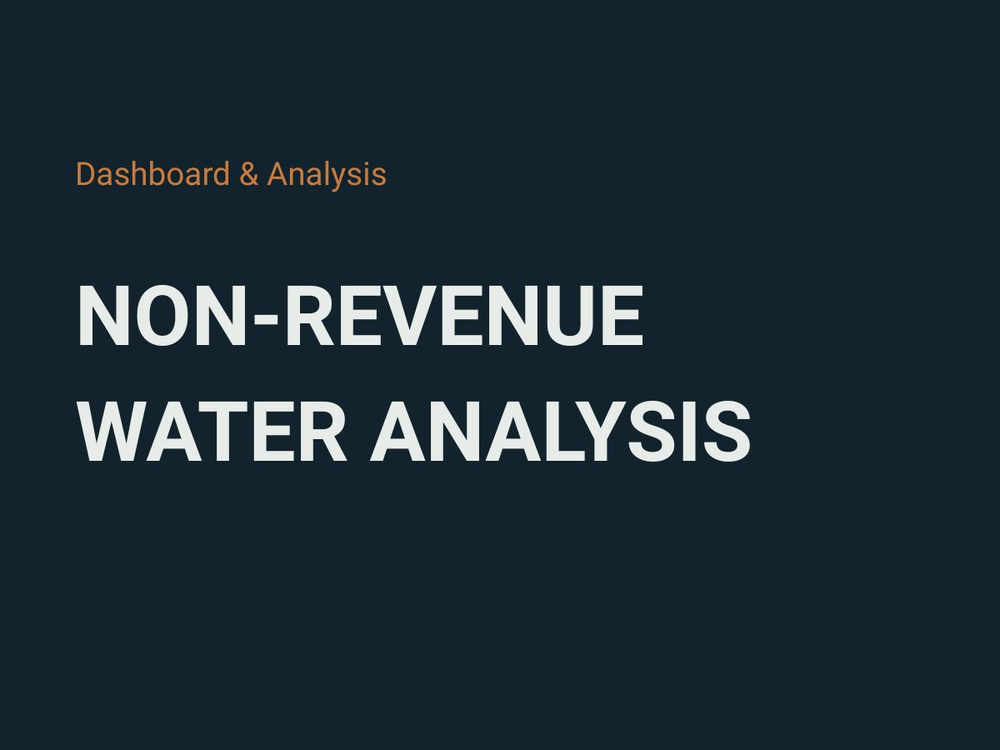

Dashboard & Analysis
Non-Revenue Water Analysis
A combined view of physical and commercial water losses across MOWASSCO's schemes, built to show where repair and billing audit effort pays off first.

The problem
Non-revenue water is treated water that is produced but never billed, whether it is lost to leaks or to metering and billing gaps. It is one of the largest efficiency challenges a water utility faces.
At MOWASSCO, meter readings and billing data lived in the ERP system, while leak and burst records lived separately in the GIS. Without a shared view, it was hard to tell whether a scheme's losses were mostly physical (leaking pipes) or commercial (unbilled or under billed connections). The two call for different interventions.
The approach
The workflow runs in five steps, repeated each billing cycle:
- Pull meter readings from the SPA ERP system through its REST API, replacing manual exports.
- Clean the data and match each reading to its customer account.
- Publish the result as a hosted feature layer on ArcGIS Enterprise.
- Link pipeline infrastructure to leak incidents with GeoPandas nearest neighbor joins.
- Present commercial and physical NRW side by side in an ArcGIS Dashboard, scheme by scheme.
What the analysis found
Across schemes, leak density and No Supply rate are strongly correlated. Likoni is the clearest outlier, with high commercial losses overlapping high physical leak activity. At pipe level, segment KNP03 emerged as the priority for repair.
The result gives management a data backed starting point for where to focus repair and billing audit resources first.
Deliverables
- A hosted feature layer of meter readings on ArcGIS Enterprise.
- An ArcGIS Dashboard comparing commercial and physical NRW by scheme.
- A GeoPackage of five layers linking pipelines to leak incidents.
Tools
Python, GeoPandas, REST API integration, ArcGIS Enterprise, ArcGIS Dashboards.